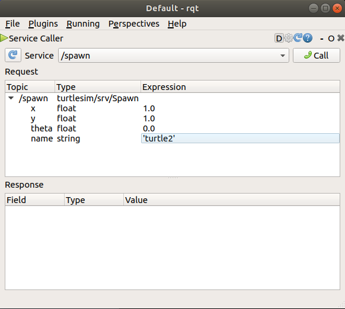
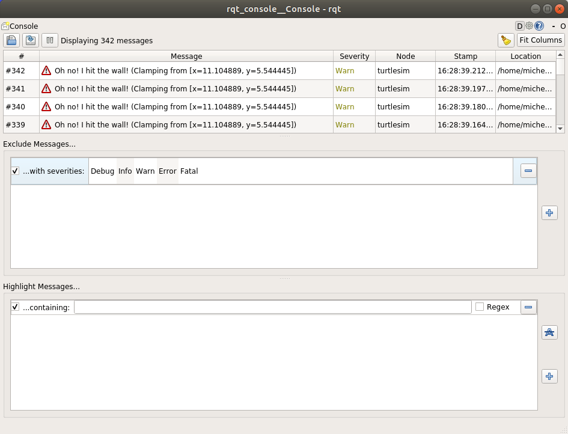
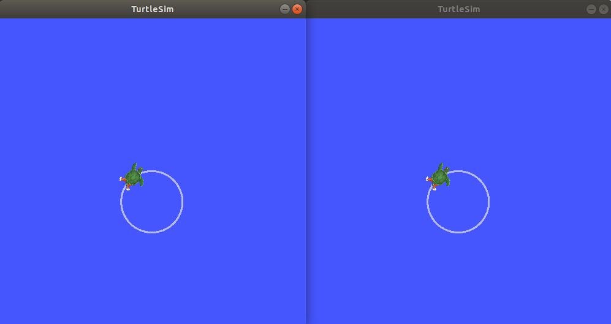

CLI 工具¶
2021 年 09 月 30 日 | 阅读时长 3 分
配置 ROS 2 环境¶
背景¶
ROS 2 依赖于使用 shell 环境组合工作区（workspaces）的概念。“工作区”（workspaces）是一个 ROS 术语，指的是你使用 ROS 2 进行开发的系统上的位置。核心 ROS 2 工作区称为底层（underlay）。随后的本地工作区称为覆盖层（overlays）。在使用 ROS 2 进行开发时，通常会同时有几个工作区处于活动状态。
组合工作区使得针对不同版本的 ROS 2 或针对不同的包集进行开发更加容易。它还允许在同一台计算机上安装多个 ROS 2 发行版（或 “distros”，例如 Dashing 和 Eloquent）并在它们之间进行切换。
这可以通过每次打开新的 shell 时都提供安装文件，或者将 source 命令添加到 shell 启动脚本一次来实现。没有激活的安装文件，你将无法访问 ROS 2 命令，或找到或使用 ROS 2 包。换句话说，你不能使用 ROS 2。
先决条件¶
在开始这些教程之前，按照 ROS 2 安装 页面上的说明安装 ROS 2。
本教程中使用的命令假设您遵循了操作系统的二进制包安装指南（Linux 的 Debian 包）。如果您是从源代码构建的，您仍然可以按照下面的方法进行操作，但是安装文件的路径可能会有所不同。如果你从源代码安装，你也不能使用 sudo apt install ros-<distro>-<package> 命令（在新手教程中经常使用）。
如果您正在使用 Linux 或 macOS，但不熟悉 shell，Unix 教程 将有所帮助。
任务¶
1 Source 安装文件
你需要在你打开的每一个 shell 上运行这个命令来访问 ROS 2 命令，就像这样：
source /opt/ros/{DISTRO}/setup.bash
call C:\dev\ros2\local_setup.bat
. ~/ros2_install/ros2-osx/setup.bash
注解
确切的命令取决于您安装 ROS 2 的位置。如果遇到问题，请确保文件路径指向您的安装。
2 在 shell 启动脚本中添加“source”
如果你不想每次打开一个新的shell（跳过任务 1）时都要获取安装文件，那么你可以将这个命令添加到 shell 启动脚本中：
echo "source /opt/ros/galactic/setup.bash" >> ~/.bashrc
要撤消此命令，请找到系统的 shell 启动脚本并删除附加的 source 命令。
仅对 PowerShell 用户，在“我的文档”中创建一个名为“WindowsPowerShell”的文件夹。在’WindowsPowerShell’中，创建文件’Microsoft.PowerShell_profile.ps1’。在文件内部，粘贴：
C:\dev\ros2_galactic\local_setup.ps1
每次打开一个新的 shell 时，PowerShell 都会请求运行此脚本的权限。为了避免这个问题，你可以运行：
Unblock-File C:\dev\ros2_galactic\local_setup.ps1
要撤消此操作，请删除新的 ‘Microsoft.PowerShell_profile.ps1’ 的文件。
echo "source ~/ros2_install/ros2-osx/setup.bash" >> ~/.bash_profile
要撤消此命令，请找到系统的 shell 启动脚本并删除附加的 source命令。
3 将 colcon_cd 添加到 shell 启动脚本中
colcon_cd 命令允许您快速地将 shell 的当前工作目录更改为包的目录。例如，colcon_cd some_ros_package 会很快将您带到 ~/ros2_install/src/some_ros_package 目录。
echo "source /usr/share/colcon_cd/function/colcon_cd.sh" >> ~/.bashrc
echo "export _colcon_cd_root=~/ros2_install" >> ~/.bashrc
没有可用的
TODO
根据您安装 colcon_cd 的方式和您的工作区所在的位置，上面的说明可能会有所不同，请参阅文档了解更多细节。要在 Linux 和 macOS 中撤消此操作，请定位系统的 shell 启动脚本并删除附加的源和导出命令。
4 检查环境变量
获取 ROS 2 安装文件将设置操作 ROS 2 所需的几个环境变量。如果你在寻找或使用你的 ROS 2 包时遇到问题，请确保使用以下命令正确设置你的环境：
printenv | grep -i ROS
set | findstr -i ROS
printenv | grep -i ROS
检查是否设置了 ROS_DISTRO 和 ROS_VERSION 等变量。
ROS_VERSION=2
ROS_PYTHON_VERSION=3
ROS_DISTRO=galactic
如果环境变量设置不正确，请返回安装指南中的安装 ROS 2 包章节。如果您需要更具体的帮助（因为环境设置文件可能来自不同的地方），您可以从社区获得答案。
ROS_DOMAIN_ID 变量¶
有关 ROS 域 ID 的详细信息，请参阅 domain ID 文章。
一旦您为您的 ROS 2 代理组确定了一个唯一的整数，您可以使用以下命令设置环境变量：
export ROS_DOMAIN_ID=<your_domain_id>
为了在 shell 会话之间保持这个设置，你可以在 shell 启动脚本中添加这个命令：
echo "export ROS_DOMAIN_ID=<your_domain_id>" >> ~/.bashrc
set ROS_DOMAIN_ID=<your_domain_id>
如果你想让这个在 shell 会话之间永久存在，也可以运行：
setx ROS_DOMAIN_ID <your_domain_id>
export ROS_DOMAIN_ID=<your_domain_id>
为了在 shell 会话之间保持这个设置，你可以在 shell 启动脚本中添加这个命令：
echo "export ROS_DOMAIN_ID=<your_domain_id>" >> ~/.bash_profile
小结¶
ROS 2 开发环境在使用前需要进行正确配置。这可以通过两种方式实现：要么在每个打开的新 shell 中获取安装文件，要么将 source 命令添加到启动脚本中。
如果您在定位或使用 ros2 包时遇到任何问题，您应该做的第一件事是检查环境变量，并确保它们被设置为您想要的版本和发行版。
介绍 turtlesim 和 rqt¶
Turtlesim 是一个轻量级的学习 ROS 2 的模拟器。它说明了 ROS 2 在最基本的水平上的作用，让你对以后使用真实机器人或机器人模拟做什么有一个概念。
rqt 是 ROS2 的 GUI 工具。在 rqt 中完成的所有操作都可以在命令行上完成，但它提供了一种更简单、更用户友好的方式来操作 ROS 2 元素。
本教程涉及核心 ROS 2 概念，如节点、主题和服务的分离。所有这些概念将在后面的教程中详细阐述；现在，您只需设置这些工具并对它们有一些感觉。
先决条件¶
前面的教程，配置 ROS 2 环境，向您展示如何设置您的环境。
任务¶
1 安装 turtlesim
像往常一样，首先在一个新的终端中找到安装文件，如 上一节教程 中所述。
为您的 ROS 2 发行版安装 turtlesim 包：
sudo apt update
sudo apt install ros-galactic-turtlesim
只要您从 ROS2 中安装的归档文件包含 ros_tutorials 存储库，就应该已经安装了 turtlesim。
只要您从 ROS2 中安装的归档文件包含 ros_tutorials 存储库，就应该已经安装了 turtlesim。
检查安装包：
ros2 pkg executables turtlesim
上面的命令应该返回 turtlesim 的可执行文件列表：
turtlesim draw_square
turtlesim mimic
turtlesim turtle_teleop_key
turtlesim turtlesim_node
2 启动 turtlesim
要启动 turtlesim，在终端输入以下命令：
ros2 run turtlesim turtlesim_node
模拟器窗口将出现，中间随机出现一只海龟。

在命令下的终端中，您将看到来自该节点的消息：
[INFO] [turtlesim]: Starting turtlesim with node name /turtlesim
[INFO] [turtlesim]: Spawning turtle [turtle1] at x=[5.544445], y=[5.544445], theta=[0.000000]
这里你可以看到你的默认海龟的名字是 turtle1，以及它生成的默认坐标。
3 使用 turtlesim
再次打开一个新的终端和 source ROS 2。
现在你要运行一个新节点来控制第一个节点中的 turtle：
ros2 run turtlesim turtle_teleop_key
此时，您应该打开了三个窗口：一个运行 turtlesim_node 的终端、一个运行 turtle_teleop_key 的终端和 turtlesim 窗口。安排这些窗口，以便您可以看到 turtlelesim 窗口，但也让终端运行 turtle_teleop_key 活动，以便您可以在 turtlelesim 中控制 turtle。
使用键盘上的方向键来控制海龟。它将在屏幕上移动，使用它所附的“笔”来绘制到目前为止它所遵循的路径。
注解
按下箭头键只会使海龟移动一小段距离，然后停止。这是因为，实际上，如果操作员失去了与机器人的连接，你不会希望机器人继续执行指令。
您可以使用 list 命令查看节点及其相关的服务、主题和操作：
ros2 node list
ros2 topic list
ros2 service list
ros2 action list
在接下来的教程中，您将学习更多关于这些概念的知识。由于本教程的目标只是对 turtlesim 进行总体概述，我们将使用 rqt（ROS 2 的图形用户界面）来更近距离地了解服务。
4 安装 rqt
打开一个新的终端安装 rqt 和它的插件：
sudo apt update
sudo apt install ~nros-galactic-rqt*
在 Windows/macOS 上安装 ROS 2 的标准归档文件包含 rqt 和它的插件，所以你应该已经安装了 rqt。
rqt 运行：
rqt
5 使用 rqt
第一次运行 rqt 后，窗口将为空。不用担心；只需从顶部的菜单栏中选择 Plugins > Services > Service Caller 即可。
注解
rqt 本身可能需要一些时间来定位所有的插件。如果你点击了 Plugins，但是没有看到 Services 或任何其他选项，你应该关闭 rqt，在终端输入命令 rqt --force-discover。

使用 Service 下拉列表左侧的刷新按钮，以确保 turtlesim 节点的所有服务都可用。
点击服务下拉列表查看 turtlesim 的服务，并选择 /spawn 服务。
5.1 尝试刷出服务¶
让我们使用 rqt 来调用 /spawn 服务。你可以从它的名字猜到 /spawn 将在 turtlesim 窗口中创建另一只海龟。
通过在 Expression 列的空单引号之间双击，为新海龟指定一个唯一的名称，如 turtle2。您可以看到这个表达式对应于 name 值，并且是 string 类型的。
输入海龟产卵的新坐标，如 x = 1.0 和 y = 1.0。

注解
如果你试图生成一个与现有海龟同名的新海龟，比如默认的 turtle1，你会在运行 turtlesim_node 的终端中得到一个错误消息：
[ERROR] [turtlesim]: A turtle named [turtle1] already exists
要生成 turtle2，您必须通过单击 rqt 窗口右上角的 call 按钮来调用服务。
你会在你输入的 x 和 y 坐标处看到一只新的海龟（同样是随机设计的）。
如果您刷新 rqt 中的服务列表，您还将看到现在除了 /turtle1/.... 之外，还有与新的 turtle 相关的服务，/turtle2/…。
5.2 尝试使用 set_pen 服务¶
现在让我们使用 /set_pen 服务给 turtle1 一个唯一的笔：

r, g 和 b 的值在 0 到 255 之间，将设置画笔 turtle1 绘制的颜色，width 设置线条的粗细。
要让 turtle1 用清晰的红线绘制，请将 r 的值更改为 255，将 width 的值更改为 5。不要忘记在更新值之后 call 服务。
如果您返回 turtle_teleop_node 运行的终端并按下方向键，您将看到 turtle1 的钢笔已经更改。

你可能已经注意到海龟是无法移动的。可以通过将 turtle1 的 cmd_vel 主题重新映射到 turtle2 来实现这一点。
6 重新映射¶
在一个新的终端中，source ROS 2，并运行：
ros2 run turtlesim turtle_teleop_key --ros-args --remap turtle1/cmd_vel:=turtle2/cmd_vel
现在，您可以在这个终端激活时移动 turtle2，在运行 turtle_teleop_key 的另一个终端激活时移动 turtle1。

7 关闭 turtlesim¶
在 turtlesim_node 终端输入 Ctrl + C，在 teleop 终端输入 q，可以停止模拟。
了解 ROS2 节点¶
背景¶
1 ROS 2 graph
在接下来的教程中，你将学习一系列构成“ROS2 graph”的核心 ROS 2 概念。
ROS graph 是 ROS 2 元素同时处理数据的网络。它包含所有可执行文件以及它们之间的连接，如果您要将它们全部映射出来并可视化的话。
2 ROS 2 中的节点
ROS 中的每个节点应负责单个模块用途（例如，一个节点用于控制轮电机，一个节点用于控制激光测距仪，等等）。每个节点可以通过主题（topics）、服务（services）、动作（actions）或参数（parameters）向其他节点发送和接收数据。

一个完整的机器人系统由许多协同工作的节点组成。在 ROS 2 中，一个可执行文件（C++程序、Python 程序等）可以包含一个或多个节点。
先决条件¶
前面的教程 向您展示了如何安装这里使用的 turtlesim 包。
和往常一样，不要忘记在你打开的每一个新终端中都输入 ROS 2。
任务¶
1 ros2 run
命令 ros2 run 从包中启动一个可执行文件。
ros2 run <package_name> <executable_name>
运行 turtlesim，打开一个新的终端，并输入以下命令：
ros2 run turtlesim turtlesim_node
这里，包名是 turtlesim，可执行文件名是 turtlesim_node。
然而，我们仍然不知道节点名。您可以使用 ros2 node list 查找节点名称。
2 ros2 node list
ros2 node list 将显示所有运行节点的名称。当您希望与某个节点进行交互，或者当您的系统运行多个节点并需要跟踪它们时，这一点特别有用。
当 turtlesim 在另一个终端中运行时，打开一个新的终端，并输入以下命令：
ros2 node list
终端将返回节点名：
/turtlesim
打开另一个新的终端并使用以下命令启动 teleop 节点：
ros2 run turtlesim turtle_teleop_key
在这里，我们再次搜索 turtlesim 包，这次搜索的是名为 turtle_teleop_key 的可执行文件。
返回到运行 ros2 node list 的终端，并再次运行它。现在您将看到两个活动节点的名称：
/turtlesim
/teleop_turtle
2.1 重新映射¶
重新映射 允许您将默认节点属性（如节点名称、主题名称、服务名称等）重新分配给自定义值。在上一篇教程中，您使用 turtle_teleop_key 上的重映射来更改正在控制的默认海龟。
现在，让我们重新分配 /turtlesim 节点的名称。在新的终端中运行如下命令：
ros2 run turtlesim turtlesim_node --ros-args --remap __node:=my_turtle
既然你再次调用 ros2 run，另一个 turtlesim 窗口将打开。但是，现在如果您返回到运行 ros2 node list 的终端，并再次运行它，您将看到三个节点名：
/my_turtle
/turtlesim
/teleop_turtle
3 ros2 node info¶
现在您知道了节点的名称，可以使用以下方法访问更多关于节点的信息：
ros2 node info <node_name>
要检查最新的节点 my_turtle，运行以下命令：
ros2 node info /my_turtle
ros2 node info 返回与该节点交互的订阅者、发布者、服务和操作（ROS graph 连接）的列表。输出应该是这样的：
/my_turtle
Subscribers:
/parameter_events: rcl_interfaces/msg/ParameterEvent
/turtle1/cmd_vel: geometry_msgs/msg/Twist
Publishers:
/parameter_events: rcl_interfaces/msg/ParameterEvent
/rosout: rcl_interfaces/msg/Log
/turtle1/color_sensor: turtlesim/msg/Color
/turtle1/pose: turtlesim/msg/Pose
Service Servers:
/clear: std_srvs/srv/Empty
/kill: turtlesim/srv/Kill
/my_turtle/describe_parameters: rcl_interfaces/srv/DescribeParameters
/my_turtle/get_parameter_types: rcl_interfaces/srv/GetParameterTypes
/my_turtle/get_parameters: rcl_interfaces/srv/GetParameters
/my_turtle/list_parameters: rcl_interfaces/srv/ListParameters
/my_turtle/set_parameters: rcl_interfaces/srv/SetParameters
/my_turtle/set_parameters_atomically: rcl_interfaces/srv/SetParametersAtomically
/reset: std_srvs/srv/Empty
/spawn: turtlesim/srv/Spawn
/turtle1/set_pen: turtlesim/srv/SetPen
/turtle1/teleport_absolute: turtlesim/srv/TeleportAbsolute
/turtle1/teleport_relative: turtlesim/srv/TeleportRelative
Service Clients:
Action Servers:
/turtle1/rotate_absolute: turtlesim/action/RotateAbsolute
Action Clients:
现在尝试在 /teleop_turtle 节点上运行相同的命令，看看它的连接与 my_turtle 有何不同。
您将在接下来的教程中了解更多关于 ROS graph 连接的概念，包括消息类型。
小结¶
节点是一个基本的 ROS 2 元素，在机器人系统中为一个单一的、模块化的目的服务。
在本教程中，通过运行可执行文件 turtlesim_node 和 turtle_teleop_key，您使用了从 turtlesim 包中创建的节点。
您了解了如何使用 ros2 node list 来发现活动节点名称和 ros2 node info，以便在单个节点上进行内省。这些工具对于理解复杂的、真实世界的机器人系统中的数据流至关重要。
了解 ROS 2 主题¶
背景¶
ROS 2 将复杂的系统分解成许多模块化节点。主题是 ROS graph 的一个重要元素，它充当节点交换消息的总线。

节点可以向任意数量的主题发布数据，并同时订阅任意数量的主题。

主题是数据在节点之间以及系统的不同部分之间移动的主要方式之一。
先决条件¶
前面的教程 提供了一些关于在此基础上构建的节点的有用背景信息。
任务¶
1 设置
打开一个新的终端并运行：
ros2 run turtlesim turtlesim_node
打开另一个终端并运行：
ros2 run turtlesim turtle_teleop_key
回想一下之前的教程，默认情况下，这些节点的名称是 /turtlesim 和 /teleop_turtle。
2 rqt_graph
在本教程中，我们将使用 rqt_graph 可视化不断变化的节点和主题，以及它们之间的连接。
turtlesim 教程 告诉您如何安装 rqt 及其所有插件，包括 rqt_graph。
要运行 rqt_graph，打开一个新的终端并输入命令：
rqt_graph
你也可以通过打开 rqt 并选择 Plugins > Introspection > Node Graph 来打开 rqt_graph。

您应该看到上面的节点和主题，以及围绕图外围的两个操作（现在让我们忽略它们）。如果你将鼠标悬停在主题的中心，你会看到颜色高亮如上图。
该图描述了 /turtlesim 节点和 /teleop_turtle 节点如何在一个主题上相互通信。/teleop_turtle 节点将数据（您为移动海龟而输入的击键）发布到 /turtle1/cmd_vel 主题，并且 /turtlesim 节点订阅该主题以接收数据。
rqt_graph 的高亮显示特性在检查更复杂的系统时非常有用，这些系统中有许多节点和主题，它们以许多不同的方式连接在一起。
rqt_graph 是一个图形自省工具。现在我们来看一些用于内省主题的命令行工具。
3 ros2 topic list
在新终端中运行 ros2 topic list 命令将返回当前系统中激活的所有主题的列表：
/parameter_events
/rosout
/turtle1/cmd_vel
/turtle1/color_sensor
/turtle1/pose
ros2 topic list -t 将返回相同的主题列表，这次主题类型加在括号中：
/parameter_events [rcl_interfaces/msg/ParameterEvent]
/rosout [rcl_interfaces/msg/Log]
/turtle1/cmd_vel [geometry_msgs/msg/Twist]
/turtle1/color_sensor [turtlesim/msg/Color]
/turtle1/pose [turtlesim/msg/Pose]
这些属性，尤其是类型，是节点如何在跨越主题时知道它们所讨论的是相同的信息。
如果你想知道所有这些主题在 rqt_graph 中的位置，你可以取消选中隐藏下面的所有框：

不过，现在还是检查一下这些选项，以避免混淆。
4 ros2 topic echo
要查看某个主题上发布的数据，请使用：
ros2 topic echo <topic_name>
因为我们知道 /teleop_turtle 通过 /turtle1/cmd_vel 主题将数据发布到 /turtlesim，所以让我们使用 echo 对该主题进行内测：
ros2 topic echo /turtle1/cmd_vel
起初，这个命令不会返回任何数据。这是因为它正在等待 /teleop_turtle 发布一些内容。
返回 turtle_teleop_key 运行的终端，使用箭头移动海龟。观察你的 echo 同时运行的终端，你会看到你做的每一个动作都会发布位置数据：
linear:
x: 2.0
y: 0.0
z: 0.0
angular:
x: 0.0
y: 0.0
z: 0.0
现在返回到 rqt_graph 并取消“Debug”框。

/_ros2cli_26646 是刚才运行的 echo 创建的节点（数字可能不同）。现在您可以看到发布者正在 cmd_vel 主题上发布数据，并且订阅了两个订阅者。
5 ros2 topic info
主题不必只是点对点的交流；它可以是一对多、多对一或多对多。
另一种看待这个问题的方式是运行：
ros2 topic info /turtle1/cmd_vel
这将返回：
Type: geometry_msgs/msg/Twist
Publisher count: 1
Subscription count: 2
6 ros2 interface show
节点使用消息通过主题发送数据。发布者和订阅者必须发送和接收相同类型的消息进行通信。
在运行 ros2 topic list -t 之后，我们看到的主题类型让我们知道每个主题使用的消息类型。回想一下 cmd_vel 主题的类型：
geometry_msgs/msg/Twist
这意味着在包 geometry_msgs 中有一个名为 Twist 的 msg。
现在我们可以在这个类型上运行 ros2 interface show <msg type> 来了解它的详细信息，特别是消息所期望的数据结构。
ros2 interface show geometry_msgs/msg/Twist
对于上面的消息类型，它会产生：
# This expresses velocity in free space broken into its linear and angular parts.
Vector3 linear
float64 x
float64 y
float64 z
Vector3 angular
float64 x
float64 y
float64 z
这告诉您 /turtlesim 节点需要一个带有两个向量（linear 和 angular）的消息，每个向量有三个元素。如果你回想一下我们看到的 /teleop_turtle 通过 echo 命令传递给 /turtlesim 的数据，它的结构是相同的：
linear:
x: 2.0
y: 0.0
z: 0.0
angular:
x: 0.0
y: 0.0
z: 0.0
7 ros2 topic pub
现在你有了消息结构，你可以直接从命令行发布数据到主题使用：
ros2 topic pub <topic_name> <msg_type> '<args>'
'<args>' 参数是您将传递给主题的实际数据，在上一节中您刚刚发现的结构中。
需要注意的是，这个参数需要在 YAML 语法中输入。像这样输入完整的命令：
ros2 topic pub --once /turtle1/cmd_vel geometry_msgs/msg/Twist "{linear: {x: 2.0, y: 0.0, z: 0.0}, angular: {x: 0.0, y: 0.0, z: 1.8}}"
--once 是一个可选参数，表示“发布一条消息然后退出”。
您将在终端收到以下信息：
publisher: beginning loop
publishing #1: geometry_msgs.msg.Twist(linear=geometry_msgs.msg.Vector3(x=2.0, y=0.0, z=0.0), angular=geometry_msgs.msg.Vector3(x=0.0, y=0.0, z=1.8))
你会看到你的海龟像这样移动：

海龟（通常是它要模拟的真正的机器人）需要稳定的指令流来持续操作。所以，为了让海龟继续移动，你可以：
ros2 topic pub --rate 1 /turtle1/cmd_vel geometry_msgs/msg/Twist "{linear: {x: 2.0, y: 0.0, z: 0.0}, angular: {x: 0.0, y: 0.0, z: 1.8}}"
这里的区别在于删除了 --once 选项并添加了 --rate 1 选项，该选项告诉 ros2 topic pub 以 1Hz 的稳定流发布命令。

您可以刷新 rqt_graph 以查看图形化的方式发生了什么。你会看到 ros 2 topic pub ... 节点（/_ros2cli_30358）在 /turtle1/cmd_vel 主题上发布，并且被两个 ros2 topic echo ... 节点（/_ros2cli_26646）和 /turtlesim 节点接收。

最后，您可以在 pose 主题上运行 echo，并重新检查 rqt_graph：
ros2 topic echo /turtle1/pose

可以看到 /turtlesim 节点也发布到 pose 主题，新 echo 节点订阅了该主题。
8 ros2 topic hz
关于这个过程的最后一个自省，你可以查看数据发布的速率，使用：
ros2 topic hz /turtle1/pose
它将返回 /turtlesim 节点将数据发布到 pose 主题的速率。
average rate: 59.354
min: 0.005s max: 0.027s std dev: 0.00284s window: 58
回想一下，您使用 ros2 topic pub --rate 1 将 turtle1/cmd_vel 的速率设置为以稳定的 1Hz 发布。如果使用 turtle1/cmd_vel 而不是 turtle1/pose 运行上面的命令，您将看到反映该速率的平均值。
9 清理
此时，您将有许多节点在运行。不要忘记在每个终端输入 Ctrl+C来阻止它们。
小结¶
节点通过主题发布信息，这允许任意数量的其他节点订阅和访问该信息。在本教程中，您使用 rqt_graph 和命令行工具研究了多个节点之间的主题连接。现在您应该对数据如何在 ROS 2 系统中移动有了很好的了解。
了解 ROS2 服务¶
背景¶
服务是 ROS graph 中节点通信的另一种方法。服务基于调用-响应（call-and-response）模型，而不是主题的发布者-订阅者（publisher-subscriber）模型。主题允许节点订阅数据流并获得持续更新，而服务只在客户端特别调用时提供数据。


先决条件¶
本教程中提到的一些概念，如节点和主题，在本系列之前的教程中已经介绍过。
你需要turtlesim 包。
和往常一样，不要忘记在你打开的每一个新终端中都输入 ROS 2。
任务¶
1 设置
启动两个 turtlesim 节点 /turtlesim 和 /teleop_turtle。
打开一个新的终端并运行：
ros2 run turtlesim turtlesim_node
打开另一个终端并运行：
ros2 run turtlesim turtle_teleop_key
2 ros2 service list
在新终端中运行 ros2 service list 命令将返回当前系统中所有活动的服务列表：
/clear
/kill
/reset
/spawn
/teleop_turtle/describe_parameters
/teleop_turtle/get_parameter_types
/teleop_turtle/get_parameters
/teleop_turtle/list_parameters
/teleop_turtle/set_parameters
/teleop_turtle/set_parameters_atomically
/turtle1/set_pen
/turtle1/teleport_absolute
/turtle1/teleport_relative
/turtlesim/describe_parameters
/turtlesim/get_parameter_types
/turtlesim/get_parameters
/turtlesim/list_parameters
/turtlesim/set_parameters
/turtlesim/set_parameters_atomically
您将看到两个节点都有相同的 6 个服务，它们的名称中带有 parameters。在 ROS 2 中，几乎每个节点都有这些基础设施服务，参数是根据这些基础设施服务构建的。在下一个教程中将有更多关于参数的内容。在本教程中，参数服务将从讨论中省略。
现在，让我们关注 turtleim-specific 服务，/clear、/kill、/reset、/spawn、/turtle1/set_pen、/turtle1/teleport_absolute 和 /turtle1/teleport_relative。您可能还记得在“介绍 turtlesim 和 rqt”教程中使用 rqt 与其中一些服务进行交互。
3 ros2 service type
服务具有描述服务的请求和响应数据如何构造的类型。服务类型的定义类似于主题类型，只不过服务类型有两个部分：一个消息用于请求，另一个消息用于响应。
要查找服务的类型，使用以下命令：
ros2 service type <service_name>
让我们看看 turtlesim /clear 服务。在一个新的终端中，输入命令：
ros2 service type /clear
它应该返回：
std_srvs/srv/Empty
Empty 类型意味着服务调用在发出请求时不发送数据，在接收响应时不接收数据。
要同时查看所有活动服务的类型，可以在 list 命令后面添加 --show-types 选项，缩写为 -t：
ros2 service list -t
这将返回：
/clear [std_srvs/srv/Empty]
/kill [turtlesim/srv/Kill]
/reset [std_srvs/srv/Empty]
/spawn [turtlesim/srv/Spawn]
...
/turtle1/set_pen [turtlesim/srv/SetPen]
/turtle1/teleport_absolute [turtlesim/srv/TeleportAbsolute]
/turtle1/teleport_relative [turtlesim/srv/TeleportRelative]
...
4 ros2 service find
如果需要查找特定类型的所有服务，可以使用命令：
ros2 service find <type_name>
例如，你可以像这样找到所有 Empty 类型的服务：
ros2 service find std_srvs/srv/Empty
这将返回：
/clear
/reset
5 ros2 interface show
您可以从命令行调用服务，但首先您需要知道输入参数的结构。
ros2 interface show <type_name>
在 /clear 服务类型为 Empty 的情况下运行此命令：
ros2 interface show std_srvs/srv/Empty
这将返回：
---
--- 将请求结构（上面）与响应结构（下面）分开。但是，如前所述，Empty 类型不发送或接收任何数据。所以，自然，它的结构是空白的。
让我们内省一个具有发送和接收数据类型的服务，比如 /spawn。由 ros2 service list -t 的结果可知 /spawn 的类型是 turtlesim/srv/Spawn。
要查看 /spawn 调用和请求中的参数，运行命令：
ros2 interface show turtlesim/srv/Spawn
这将返回：
float32 x
float32 y
float32 theta
string name # Optional. A unique name will be created and returned if this is empty
---
string name
--- 行上面的信息告诉我们调用 /spawn 所需的参数。x，y 和 theta 决定生成的海龟的位置，name 显然是可选的。
在本例中，这一行下面的信息不是您需要知道的，但它可以帮助您理解从调用中获得的响应的数据类型。
6 ros2 service call
现在，您已经知道了什么是服务类型、如何查找服务类型以及如何查找该类型参数的结构，您可以使用以下命令调用服务：
ros2 service call <service_name> <service_type> <arguments>
<arguments> 部分是可选的。例如，你知道 Empty 类型化服务没有任何参数：
ros2 service call /clear std_srvs/srv/Empty
此命令将清除 turtle 窗口中所绘制的任何线。

现在让我们通过调用 /spawn 和输入参数来生成一个新的海龟。命令行中的服务调用中的输入 <arguments> 需要使用 YAML 语法。
输入命令：
ros2 service call /spawn turtlesim/srv/Spawn "{x: 2, y: 2, theta: 0.2, name: ''}"
你会得到这个方法风格的视图，显示正在发生的事情，然后是服务响应：
requester: making request: turtlesim.srv.Spawn_Request(x=2.0, y=2.0, theta=0.2, name='')
response:
turtlesim.srv.Spawn_Response(name='turtle2')
你的 turtlesim 窗口会立即更新新生成的海龟：
相关内容¶
请阅读教程，这是使用 Robotis 机器人手臂“理解ROS 2服务”的一个出色的现实应用。
小结¶
节点可以通过 ROS2 中的服务进行通信。与主题不同——一种通信模式，其中一个节点发布信息，可以使用一个或多个用户服务请求/响应模式，客户端发出请求节点提供服务和服务处理请求并生成一个响应。
你通常不希望使用服务进行持续回调；主题甚至动作会更合适。
在本教程中，您使用命令行工具来识别、详细说明和调用服务。
了解 ROS2 参数¶
背景¶
参数是节点的配置值。您可以将参数视为节点设置。节点可以将参数存储为整数、浮点数、布尔值、字符串和列表。在 ROS 2 中，每个节点维护自己的参数。所有参数都是动态可重新配置的，并基于 ROS 2 服务 构建。
先决条件¶
本教程使用 turtlesim 包。
和往常一样，不要忘记在你打开的每一个新终端中都输入 ROS 2。
任务¶
设置¶
启动两个 turtlesim 节点 /turtlesim 和 /teleop_turtle。
打开一个新的终端并运行：
ros2 run turtlesim turtlesim_node
打开另一个终端并运行：
ros2 run turtlesim turtle_teleop_key
ros2 param list¶
要查看属于您的节点的参数，打开一个新的终端并输入命令：
ros2 param list
您将看到节点名称空间 /teleop_turtle 和 /turtlesim，后面跟着每个节点的参数：
/teleop_turtle:
qos_overrides./parameter_events.publisher.depth
qos_overrides./parameter_events.publisher.durability
qos_overrides./parameter_events.publisher.history
qos_overrides./parameter_events.publisher.reliability
scale_angular
scale_linear
use_sim_time
/turtlesim:
background_b
background_g
background_r
qos_overrides./parameter_events.publisher.depth
qos_overrides./parameter_events.publisher.durability
qos_overrides./parameter_events.publisher.history
qos_overrides./parameter_events.publisher.reliability
use_sim_time
每个节点都有参数 use_sim_time；这并不是乌龟独有的。
根据它们的名称，看起来 /turtlesim 的参数使用 RGB 颜色值确定了 turtlesim 窗口的背景颜色。
要确定参数的类型，可以使用 ros2 param get。
ros2 param get¶
需要查询某个参数的类型和当前值。
ros2 param get <node_name> <parameter_name>
让我们找出 /turtlesim 的参数 background_g 的当前值：
ros2 param get /turtlesim background_g
将返回值：
Integer value is: 86
现在你知道 background_g 保存了一个整数值。
如果您在 background_r 和 background_b 上运行相同的命令，您将分别得到值 69 和 255。
ros2 param set¶
要在运行时更改参数的值，使用命令：
ros2 param set <node_name> <parameter_name> <value>
让我们改变 /turtlesim 的背景色：
ros2 param set /turtlesim background_r 150
您的终端应该返回该消息：
Set parameter successful
你的 turtlesim 窗口的背景应该改变颜色：

使用 set 命令设置参数只会在当前会话中更改参数，而不是永久更改。但是，您可以保存设置并在下次启动节点时重新加载它们。
ros2 param dump¶
该命令可以将节点当前所有的参数值“dump”到文件中，以备以后使用：
ros2 param dump <node_name>
要保存 /turtlesim 参数的当前配置，输入命令：
ros2 param dump /turtlesim
您的终端将返回消息：
Saving to: ./turtlesim.yaml
您将在运行工作区的目录中发现一个新文件。如果你打开这个文件，你会看到以下内容：
/turtlesim:
ros__parameters:
background_b: 255
background_g: 86
background_r: 150
qos_overrides:
/parameter_events:
publisher:
depth: 1000
durability: volatile
history: keep_last
reliability: reliable
use_sim_time: false
如果您希望在将来用相同的参数重新加载节点，转储参数将非常方便。
ros2 param load¶
使用该命令可以将参数从文件加载到当前运行的节点：
ros2 param load <node_name> <parameter_file>
装载 ./turtlesim.yaml 文件生成的 ros2 参数转储到 /turtlesim 节点的参数，输入命令：
ros2 param load /turtlesim ./turtlesim.yaml
您的终端将返回消息：
Set parameter background_b successful
Set parameter background_g successful
Set parameter background_r successful
Set parameter qos_overrides./parameter_events.publisher.depth failed: parameter 'qos_overrides./parameter_events.publisher.depth' cannot be set because it is read-only
Set parameter qos_overrides./parameter_events.publisher.durability failed: parameter 'qos_overrides./parameter_events.publisher.durability' cannot be set because it is read-only
Set parameter qos_overrides./parameter_events.publisher.history failed: parameter 'qos_overrides./parameter_events.publisher.history' cannot be set because it is read-only
Set parameter qos_overrides./parameter_events.publisher.reliability failed: parameter 'qos_overrides./parameter_events.publisher.reliability' cannot be set because it is read-only
Set parameter use_sim_time successful
注解
只读参数只能在启动时修改，而不能在启动后修改，这就是为什么“qos_overrides”参数会有一些警告。
在节点启动时加载参数文件¶
在节点启动时加载参数文件：
ros2 run <package_name> <executable_name> --ros-args --params-file <file_name>
这是您总是用来启动 turtlesim 的同一个命令，添加了标志 --ros-args 和 --params-file，后面跟着您想要加载的文件。
停止正在运行的 turtlesim 节点，这样你就可以用保存的参数重新加载它，使用：
ros2 run turtlesim turtlesim_node --ros-args --params-file ./turtlesim.yaml
turtlesim 窗口应该像往常一样显示，但是使用您之前设置的紫色背景。
注解
在这种情况下，参数在启动时被修改，因此指定的只读参数也将生效。
小结¶
节点有参数来定义它们的默认配置值。您可以从命令行获取和设置参数值。您还可以将参数设置保存到一个文件中，以便在以后的会话中重新加载它们。
了解 ROS 2 动作¶
背景¶
动作是 ROS 2 中的通信类型之一，用于长时间运行的任务。它们由三个部分组成：目标、反馈和结果。
动作建立在主题和服务之上。它们的功能与服务类似，只是可以取消动作。它们还提供稳定的反馈，而不是只提供单一响应的服务。
动作使用客户端-服务器模型，类似于发布者-订阅者模型（在 主题 教程中描述）。“动作客户端”节点将目标发送到“动作服务器”节点，该节点确认目标并返回流和结果。

任务¶
设置¶
启动两个 turtlesim 节点 /turtlesim 和 /teleop_turtle。
打开一个新的终端并运行：
ros2 run turtlesim turtlesim_node
打开另一个终端并运行：
ros2 run turtlesim turtle_teleop_key
使用动作¶
当您启动 /teleop_turtle 节点时，您将在终端中看到以下消息：
Use arrow keys to move the turtle.
Use G|B|V|C|D|E|R|T keys to rotate to absolute orientations. 'F' to cancel a rotation.
让我们关注第二行，它对应一个动作。（第一个指令对应于前面在主题教程中讨论的“cmd_vel”主题。）
注意，字母键 G|B|V|C|D|E|R|T 在 US QWERTY 键盘上的 F 键周围形成一个“框”（如果你没有使用 QWERTY 键盘，请参阅下面的链接）。每个键在 F 周围的位置对应于 turtlesim 中的那个方向。例如，E 会将海龟的方向旋转到左上角。
{kind=link}
请注意 /turtlesim 节点运行的终端。每当您按下这些键之一时，您就向 /turtlesim 节点的动作服务器发送一个目标。目标是旋转海龟朝向特定的方向。一旦海龟完成了它的旋转，就会显示一个传递目标结果的消息：
[INFO] [turtlesim]: Rotation goal completed successfully
F 键将在执行过程中取消目标。
尝试按下 C 键，然后在海龟完成旋转之前按下 F 键。在 /turtlesim 节点运行的终端中，你会看到这样的消息：
[INFO] [turtlesim]: Rotation goal canceled
不仅客户端（您在 teleop 中的输入）可以停止目标，服务器端（/turtlesim 节点）也可以。当服务器端选择停止处理一个目标时，它被称为“中止”（abort）该目标。
试着按下 D 键，然后在第一次旋转完成之前按下 G 键。在 /turtlesim 节点运行的终端中，你会看到这样的消息：
[WARN] [turtlesim]: Rotation goal received before a previous goal finished. Aborting previous goal
这个动作服务器选择中止第一个目标，因为它有了一个新的目标。它可以选择其他的目标，比如拒绝新的目标，或者在第一个目标完成后执行第二个目标。不要假设每个动作服务器在获得一个新目标时都会选择中止当前目标。
ros2 node info¶
要查看 /turtlesim 节点的动作，打开一个新的终端并运行命令：
ros2 node info /turtlesim
它将返回 /turtlesim 的订阅者、发布者、服务、动作服务器和动作客户端列表：
/turtlesim
Subscribers:
/parameter_events: rcl_interfaces/msg/ParameterEvent
/turtle1/cmd_vel: geometry_msgs/msg/Twist
Publishers:
/parameter_events: rcl_interfaces/msg/ParameterEvent
/rosout: rcl_interfaces/msg/Log
/turtle1/color_sensor: turtlesim/msg/Color
/turtle1/pose: turtlesim/msg/Pose
Service Servers:
/clear: std_srvs/srv/Empty
/kill: turtlesim/srv/Kill
/reset: std_srvs/srv/Empty
/spawn: turtlesim/srv/Spawn
/turtle1/set_pen: turtlesim/srv/SetPen
/turtle1/teleport_absolute: turtlesim/srv/TeleportAbsolute
/turtle1/teleport_relative: turtlesim/srv/TeleportRelative
/turtlesim/describe_parameters: rcl_interfaces/srv/DescribeParameters
/turtlesim/get_parameter_types: rcl_interfaces/srv/GetParameterTypes
/turtlesim/get_parameters: rcl_interfaces/srv/GetParameters
/turtlesim/list_parameters: rcl_interfaces/srv/ListParameters
/turtlesim/set_parameters: rcl_interfaces/srv/SetParameters
/turtlesim/set_parameters_atomically: rcl_interfaces/srv/SetParametersAtomically
Service Clients:
Action Servers:
/turtle1/rotate_absolute: turtlesim/action/RotateAbsolute
Action Clients:
注意 /turtlesim 的 /turtle1/rotate_absolute 操作位于 Action Servers 下。这意味着 /turtlesim 响应 /turtle1/rotate_absolute 动作并提供反馈。
/teleop_turtle 节点在 Action Clients 下的名称为 /turtle1/rotate_absolute，这意味着它发送该操作名称的目标。
ros2 node info /teleop_turtle
这将返回：
/teleop_turtle
Subscribers:
/parameter_events: rcl_interfaces/msg/ParameterEvent
Publishers:
/parameter_events: rcl_interfaces/msg/ParameterEvent
/rosout: rcl_interfaces/msg/Log
/turtle1/cmd_vel: geometry_msgs/msg/Twist
Service Servers:
/teleop_turtle/describe_parameters: rcl_interfaces/srv/DescribeParameters
/teleop_turtle/get_parameter_types: rcl_interfaces/srv/GetParameterTypes
/teleop_turtle/get_parameters: rcl_interfaces/srv/GetParameters
/teleop_turtle/list_parameters: rcl_interfaces/srv/ListParameters
/teleop_turtle/set_parameters: rcl_interfaces/srv/SetParameters
/teleop_turtle/set_parameters_atomically: rcl_interfaces/srv/SetParametersAtomically
Service Clients:
Action Servers:
Action Clients:
/turtle1/rotate_absolute: turtlesim/action/RotateAbsolute
ros2 action list¶
要在 ROS graph 中识别所有的动作，运行命令：
ros2 action list
这将返回：
/turtle1/rotate_absolute
这是目前在 ROS graph 中唯一的动作。正如您前面看到的，它控制海龟的旋转。您还知道，通过使用 ros2 node info <node_name> 命令，这个动作有一个动作客户端（/teleop_turtle 的一部分）和一个动作服务器（/turtlesim 的一部分）。
动作有类型，类似于主题和服务。要查找 /turtle1/rotate_absolute 的类型，运行命令：
ros2 action list -t
这将返回：
/turtle1/rotate_absolute [turtlesim/action/RotateAbsolute]
在每个动作名称右边的括号中（在本例中只有 /turtle1/rotate_absolute）是动作类型 turtlesim/action/RotateAbsolute。当您想从命令行或代码中执行操作时，您将需要这个。
ros2 action info¶
你可以使用以下命令来进一步反省 /turtle1/rotate_absolute 动作：
ros2 action info /turtle1/rotate_absolute
这将返回：
Action: /turtle1/rotate_absolute
Action clients: 1
/teleop_turtle
Action servers: 1
/turtlesim
这告诉我们前面在每个节点上运行 ros2 node info 时学到的内容：/teleop_turtle 节点有一个动作客户端，/turtlesim 节点有一个动作服务器，用于 /turtle1/rotate_absolute 动作。
ros2 interface show¶
在你自己发送或执行动作目标之前，你还需要了解动作类型的结构。
回想一下，在运行命令 ros2 action list -t 时，您确定了 /turtle1/rotate_absolute 的类型。在终端中输入以下命令，动作类型如下：
ros2 interface show turtlesim/action/RotateAbsolute
这将返回：
# The desired heading in radians
float32 theta
---
# The angular displacement in radians to the starting position
float32 delta
---
# The remaining rotation in radians
float32 remaining
该消息的第一部分，在 --- 之上，是目标请求的结构（数据类型和名称）。下一部分是结果的结构。最后一部分是反馈的结构。
ros2 action send_goal¶
现在让我们用下面的语法从命令行发送一个动作目标：
ros2 action send_goal <action_name> <action_type> <values>
<values> 需要为 YAML 格式。
注意 turtlesim 窗口，并在终端中输入以下命令：
ros2 action send_goal /turtle1/rotate_absolute turtlesim/action/RotateAbsolute "{theta: 1.57}"
你应该看到海龟在旋转，在你的终端中还会看到以下消息：
Waiting for an action server to become available...
Sending goal:
theta: 1.57
Goal accepted with ID: f8db8f44410849eaa93d3feb747dd444
Result:
delta: -1.568000316619873
Goal finished with status: SUCCEEDED
所有目标都有一个唯一的 ID，显示在返回消息中。您还可以看到结果，一个名为 delta 的字段，这是到起始位置的位移。
要查看这个目标的反馈，在 ros2 action send_goal 命令中添加 --feedback：
ros2 action send_goal /turtle1/rotate_absolute turtlesim/action/RotateAbsolute "{theta: -1.57}" --feedback
您的终端将返回消息：
Sending goal:
theta: -1.57
Goal accepted with ID: e6092c831f994afda92f0086f220da27
Feedback:
remaining: -3.1268222332000732
Feedback:
remaining: -3.1108222007751465
…
Result:
delta: 3.1200008392333984
Goal finished with status: SUCCEEDED
你将继续收到反馈，remaining 弧度，直到目标完成。
小结¶
动作类似于服务，允许您执行长时间运行的任务，提供定期反馈，并且是可取消的。
机器人系统很可能使用动作来导航。动作目标可以告诉机器人移动到某个位置。当机器人导航到某个位置时，它可以在沿途发送更新（即反馈），然后在到达目的地后发送最终结果信息。
Turtlesim 有一个动作服务器，动作客户端可以向其发送目标来旋转海龟。在本教程中，您自省了 /turtle1/rotate_absolute 动作，以便更好地了解什么动作。
使用 rqt_console¶
背景¶
rqt_console 是一个 GUI 工具，用于在 ROS 2 中内省日志消息。通常，日志消息显示在您的终端中。使用 rqt_console，您可以随时间收集这些消息，以更有组织的方式仔细地查看它们，过滤它们，保存它们，甚至重新加载已保存的文件，以便在不同的时间进行内省。
节点使用日志以各种方式输出有关事件和状态的消息。为了用户的利益，它们的内容通常是信息的。
先决条件¶
您需要安装 rqt_console 和 turtlesim。
和往常一样，不要忘记在你打开的每一个新终端中都输入 ROS 2。
任务¶
设置¶
在新的终端中使用以下命令启动 rqt_console：
ros2 run rqt_console rqt_console
rqt_console 窗口将打开：

控制台的第一部分是显示系统日志消息的地方。
在中间，您可以选择通过排除严重性级别来过滤消息。您还可以使用右边的加号按钮添加更多的排除过滤器。
底部部分用于突出显示包含您输入的字符串的消息。你也可以在这个部分添加更多的过滤器。
现在用以下命令在一个新的终端中启动 turtlesim：
ros2 run turtlesim turtlesim_node
rqt_console 消息¶
为了生成 rqt_console 要显示的日志消息，让我们让海龟撞到墙上。在一个新的终端中，输入下面的 ros2 topic pub 命令（在主题教程中详细讨论）：
ros2 topic pub -r 1 /turtle1/cmd_vel geometry_msgs/msg/Twist "{linear: {x: 2.0, y: 0.0, z: 0.0}, angular: {x: 0.0,y: 0.0,z: 0.0}}"
因为上面的命令是以稳定的速度发布主题，所以海龟会不断地碰壁。在 rqt_console 中，您将看到Warn级别的相同消息反复显示，如下所示：

在你运行 ros2 topic pub 命令的终端中按 Ctrl + C 来阻止你的海龟撞到墙上。
记录器水平¶
ROS 2 的记录器水平按严重程度排序：
Fatal
Error
Warn
Info
Debug
对于每个级别的含义没有确切的标准，但可以放心地假设：
Fatal消息表明，系统将终止试图保护自己免受损害。Error消息指出了重要的问题，这些问题不一定会损害系统，但会阻止系统正常运行。Warn消息指出可能代表更深层次问题的意外活动或非理想结果，但不会完全损害功能。Info消息指示事件和状态更新，作为系统按预期运行的可视化验证。Debug消息详细说明了系统执行的整个逐步过程。
默认级别为 Info。您将只看到默认严重性级别和更严重级别的消息。
通常，只有 Debug 消息被隐藏，因为它们是唯一比 Info 级别轻的级别。例如，如果将默认级别设置为 Warn，则只会看到严重性为 Warn、Error 和 Fatal 的消息。
您可以在第一次使用重映射运行 /turtlesim 节点时设置默认记录器级别。在终端中输入以下命令：
ros2 run turtlesim turtlesim_node --ros-args --log-level WARN
现在，您将不会看到上次启动 turtlesim 时在控制台中出现的初始 Info 级别警告。这是因为 Info 消息的优先级低于新的默认严重性 Warn。
小结¶
如果需要仔细检查来自系统的日志消息，rqt_console 可能非常有用。出于各种原因，您可能需要检查日志消息，通常是为了找出哪里出了问题以及导致问题的一系列事件。
创建启动文件¶
背景¶
到目前为止，在本教程中，您已经为运行的每个新节点打开了新的终端。当您创建同时运行越来越多节点的更复杂系统时，打开终端并重新输入配置细节将变得非常繁琐。
启动文件允许您同时启动和配置多个包含 ROS 2 节点的可执行文件。
使用 ros2 launch 命令运行单个启动文件将立即启动整个系统——所有节点及其配置。
先决条件¶
本教程使用 rqt_console 和 turtlesim。
您还需要使用您首选的文本编辑器。
和往常一样，不要忘记在你打开的每一个新终端中都输入 ROS 2。
任务¶
设置¶
创建一个新的目录来存储你的启动文件：
mkdir launch
在终端中输入以下命令，创建一个名为 turtlesim_mimic_launch.py 的启动文件：
touch launch/turtlesim_mimic_launch.py
type nul > launch/turtlesim_mimic_launch.py
您还可以使用 GUI 进入系统的文件目录，并以这种方式创建一个新文件。
在首选文本编辑器中打开新文件。
编写启动文件¶
让我们使用 turtlesim 包及其可执行文件来组合一个 ROS 2 启动文件。
将完整的代码复制并粘贴到 turtlesim_mimic_launch.py 文件中：
from launch import LaunchDescription
from launch_ros.actions import Node
def generate_launch_description():
return LaunchDescription([
Node(
package='turtlesim',
namespace='turtlesim1',
executable='turtlesim_node',
name='sim'
),
Node(
package='turtlesim',
namespace='turtlesim2',
executable='turtlesim_node',
name='sim'
),
Node(
package='turtlesim',
executable='mimic',
name='mimic',
remappings=[
('/input/pose', '/turtlesim1/turtle1/pose'),
('/output/cmd_vel', '/turtlesim2/turtle1/cmd_vel'),
]
)
])
检查启动文件¶
这些导入语句会导入一些 Python 启动模块。
from launch import LaunchDescription
from launch_ros.actions import Node
接下来，启动描述本身开始：
def generate_launch_description():
return LaunchDescription([
])
LaunchDescription 中有一个由三个节点组成的系统，所有节点都来自 turtlesim 包。该系统的目标是启动两个海龟模拟窗口，让一只海龟模仿另一只的动作。
启动描述中的前两个动作启动两个 turtlesim 窗口：
Node(
package='turtlesim',
namespace='turtlesim1',
executable='turtlesim_node',
name='sim'
),
Node(
package='turtlesim',
namespace='turtlesim2',
executable='turtlesim_node',
name='sim'
),
注意，这两个节点之间的唯一区别是它们的名称空间值。唯一的名称空间允许系统启动两个没有节点名称或主题名称冲突的模拟器。
在这个系统中，两只海龟都接收关于同一主题的命令，并发布它们在同一主题上的姿势。如果没有惟一的名称空间，就没有办法区分海龟的消息。
最后一个节点也来自turtlesim包，但它是一个不同的可执行文件：mimic。
Node(
package='turtlesim',
executable='mimic',
name='mimic',
remappings=[
('/input/pose', '/turtlesim1/turtle1/pose'),
('/output/cmd_vel', '/turtlesim2/turtle1/cmd_vel'),
]
)
该节点以重新映射的形式添加了配置细节。
mimic 的 /input/pose 主题被映射到 /turtlesim1/turtle1/pose，它的 /output/cmd_vel 主题被映射到 /turtlesim2/turtle1/cmd_vel。这意味着 mimic 将订阅 /turtlesim1/sim 的 pose 主题，并为 /turtlesim2/sim 的 velocity 命令主题重新发布它。换句话说，turtlesim2 会模仿 turtlesim1 的动作。
ros2 launch¶
要启动 turtlesim_mimic_launch.py，请进入之前创建的目录并运行以下命令：
cd launch
ros2 launch turtlesim_mimic_launch.py
注解
可以直接启动 launch 文件（如上所述），也可以由包提供。当它由包提供时，语法是：
ros2 launch <package_name> <launch_file_name>
您将在后面的教程中了解更多关于创建包的内容。
两个 turtlesim 窗口将打开，你将看到以下 [INFO] 消息，告诉你启动文件已经启动了哪些节点：
[INFO] [launch]: Default logging verbosity is set to INFO
[INFO] [turtlesim_node-1]: process started with pid [11714]
[INFO] [turtlesim_node-2]: process started with pid [11715]
[INFO] [mimic-3]: process started with pid [11716]
要查看系统的运行情况，打开一个新的终端，在 /turtlesim1/turtle1/cmd_vel 主题上运行 ros2 topic pub 命令，让第一个海龟移动：
ros2 topic pub -r 1 /turtlesim1/turtle1/cmd_vel geometry_msgs/msg/Twist "{linear: {x: 2.0, y: 0.0, z: 0.0}, angular: {x: 0.0, y: 0.0, z: -1.8}}"
你会看到两只乌龟走的是同一条路。

使用 rqt_graph 内省系统¶
当系统仍在运行时，打开一个新的终端并运行 rqt_graph，以更好地了解启动文件中节点之间的关系。
运行以下命令：
rqt_graph

一个隐藏的节点（您运行的 ros2 topic pub 命令）将数据发布到左边的 /turtlesim1/turtle1/cmd_vel 主题，该主题是 /turtlesim1/sim 节点订阅的。graph 的其余部分显示了前面描述的内容：mimic 订阅/ turtlesim1/sim 的 pose 主题，并发布 /turtlesim2/sim 的 velocity 命令主题。
小结¶
启动文件简化了具有许多节点和特定配置细节的复杂系统的运行。您可以使用 Python 创建启动文件，并使用 ros2 launch 命令运行它们。
记录和回放数据¶
背景¶
ros2 bag 是一个命令行工具，用于记录系统中发布的主题数据。它积累传递给任意数量主题的数据，并将其保存在数据库中。然后可以重放数据以再现测试和实验的结果。记录主题也是分享你的工作并让别人重新创造它的好方法。
先决条件¶
您应该已经安装了 ros2 bag 作为常规 ROS2 设置的一部分。
如果你在 Linux 上用 debian 安装，但是你的系统不能识别这个命令，那么像这样安装它：
sudo apt-get install ros-galactic-ros2bag \
ros-galactic-rosbag2-storage-default-plugins
任务¶
设置¶
您将在 turtlesim 系统中记录您的键盘输入，以便稍后保存和重放，因此首先启动 /turtlesim 和 /teleop_turtle 节点。
打开一个新的终端并运行：
ros2 run turtlesim turtlesim_node
打开另一个终端并运行：
ros2 run turtlesim turtle_teleop_key
让我们也创建一个新目录来存储我们保存的记录，这是一个良好的做法：
mkdir bag_files
cd bag_files
选择一个主题¶
ros2 bag 只能记录发表的主题的数据。要查看系统主题的列表，打开一个新的终端并运行命令：
ros2 topic list
这将返回：
/parameter_events
/rosout
/turtle1/cmd_vel
/turtle1/color_sensor
/turtle1/pose
在主题教程中，您了解到 /turtle_teleop 节点在 /turtle1/cmd_vel 主题上发布命令，使海龟在 turtleim 中移动。
要查看 /turtle1/cmd_vel 发布的数据，使用命令：
ros2 topic echo /turtle1/cmd_vel
一开始什么都不会显示出来，因为 teleop 没有公布任何数据。回到你运行遥控终端的地方，选择它，让它激活。使用方向键移动海龟，您将看到正在运行 ros2 topic echo 的终端上发布的数据。
linear:
x: 2.0
y: 0.0
z: 0.0
angular:
x: 0.0
y: 0.0
z: 0.0
---
ros2 bag record¶
要记录发布到主题的数据，请使用命令语法：
ros2 bag record <topic_name>
在对选定的主题运行此命令之前，打开一个新的终端并移动到前面创建的 bag_files 目录中，因为 rosbag 文件将保存在运行它的目录中。
运行以下命令：
ros2 bag record /turtle1/cmd_vel
您将在终端中看到以下消息（日期和时间将会不同）：
[INFO] [rosbag2_storage]: Opened database 'rosbag2_2019_10_11-05_18_45'.
[INFO] [rosbag2_transport]: Listening for topics...
[INFO] [rosbag2_transport]: Subscribed to topic '/turtle1/cmd_vel'
[INFO] [rosbag2_transport]: All requested topics are subscribed. Stopping discovery...
现在 ros2 bag 正在记录发表在 /turtle1/cmd_vel 主题上的数据。回到 teleop 终端，再次移动海龟。这些动作并不重要，但试着在稍后重放数据时找出一个可识别的模式。

按 Ctrl+C 停止录制。
数据将在一个名为 rosbag2_year_month_day-hour_minute_second 的包文件中积累。
记录多个主题¶
您还可以记录多个主题，以及更改 ros2 bag 保存到的文件的名称。
执行如下命令：
ros2 bag record -o subset /turtle1/cmd_vel /turtle1/pose
-o 选项允许您为您的包文件选择一个唯一的名称。下面的字符串（在本例中是subset）是文件名。
要一次记录多个主题，只需用空格分开列出每个主题。
您将看到以下消息，确认正在记录这两个主题。
[INFO] [rosbag2_storage]: Opened database 'subset'.
[INFO] [rosbag2_transport]: Listening for topics...
[INFO] [rosbag2_transport]: Subscribed to topic '/turtle1/cmd_vel'
[INFO] [rosbag2_transport]: Subscribed to topic '/turtle1/pose'
[INFO] [rosbag2_transport]: All requested topics are subscribed. Stopping discovery...
你可以移动海龟，完成后按 Ctrl+C。
注解
您可以向命令添加另一个选项 -a，它记录系统上的所有主题。
ros2 bag info¶
你可以通过运行：
ros2 bag info <bag_file_name>
在 subset 包文件上运行此命令将返回文件的信息列表：
ros2 bag info subset
Files: subset.db3
Bag size: 228.5 KiB
Storage id: sqlite3
Duration: 48.47s
Start: Oct 11 2019 06:09:09.12 (1570799349.12)
End Oct 11 2019 06:09:57.60 (1570799397.60)
Messages: 3013
Topic information: Topic: /turtle1/cmd_vel | Type: geometry_msgs/msg/Twist | Count: 9 | Serialization Format: cdr
Topic: /turtle1/pose | Type: turtlesim/msg/Pose | Count: 3004 | Serialization Format: cdr
要查看各个消息，您必须打开数据库（在本例中是 sqlite3）来检查它，这超出了 ROS 2 的范围。
ros2 bag play¶
在播放包文件前，请在终端上输入 Ctrl+C。然后确保 turtlesim 窗口是可见的，这样你就可以看到包文件的运行。
输入命令：
ros2 bag play subset
终端将返回消息：
[INFO] [rosbag2_storage]: Opened database 'subset'.
你的海龟将遵循你在记录时输入的相同路径（虽然不是 \(100\%\) 准确；Turtlesim 对系统时间的微小变化非常敏感）。

因为 subset 文件记录了 /turtle1/pose 主题，只要 turtlesim 在运行，ros2 bag play 命令就不会退出，即使你不移动。
这是因为只要 /turtlesim 节点是活动的，它就会定期在 /turtle1/pose 主题上发布数据。您可能已经注意到，在上面的 ros2 bag info 示例结果中 /turtle1/cmd_vel 主题的 Count 信息只有9；这是我们在录音时按方向键的次数。
注意 /turtle1/pose 的 Count 值超过 3000；当我们记录的时候，关于这个话题的数据发表了 3000 次。
要了解位置数据发布的频率，可以运行以下命令：
ros2 topic hz /turtle1/pose
小结¶
您可以使用 ros2 bag 命令记录在您的 ROS2 系统中传递的主题数据。无论你是与他人分享你的工作还是反思你自己的实验，了解它都是一个很好的工具。